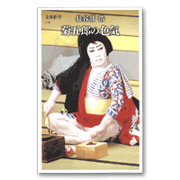

音羽屋をより深く知るための本
音羽屋をより深く知るための本 > 『菊五郎の色気』
長谷部浩『菊五郎の色気』
（文芸春秋 2007年）七代目、色気の源泉と名跡の重み
著者自身もあとがきで述べているように、この本は、菊五郎という一俳優の評論であると同時に、歌舞伎の主な演目の解説書ともなっています。歌舞伎を、そして菊五郎をよく知る人にとっても、また歌舞伎初心者にとっても楽しめる一冊であると言えるでしょう。
「菊五郎」という名跡をめぐって、当代の襲名から尾上家の代々へと思いを馳せる第一部では、「襲名への道筋」と題する第一章が印象的です。少年期に自分で「これではいかん」と思って松緑に教えを請うたこと、舞台に立てない変声期に、必死になって「今の子たちの何倍かは」舞台を見たこと。若い頃にこれほどに舞台に情熱を注いだと語るのは、情熱・熱意といったものを表に出すことをあまりしない菊五郎としては貴重な発言と言えるでしょう。また、著者も当惑し、インタビューに同席した菊之助も「驚きを隠さなかった」という、菊五郎が語る「襲名の事情」。「本当の策士は父だったのではないか」、「父は、歌舞伎界のどこにも敵を作らないことで、私を菊五郎にした」、「父の一生は、私を菊五郎にするためにあったのかもしれない」。菊五郎の父梅幸が、本当にそうであったかはわかりません。しかし、菊五郎にこのように思わせる菊五郎という名跡の重さ、梅幸の人生の重さからは、我々観客にはとうてい想像の及ばない歌舞伎の世界の深みが感じられます。
第二部では、当代菊五郎が得意とする役々が、種々の芸談や著者の評論によってつづられていきます。初めに述べたように、菊五郎自身の当たり役を振り返るとともに、その役々について、芸談・劇評などを用いて様々な角度からアプローチする方法は、作品や役についての解説にもなっています。虎蔵や桜丸などの若衆、弁天小僧やお嬢吉三などの悪党、助六や御所五郎蔵などの男伊達、というように続いていくのですが、書名に『菊五郎の色気』とあるだけに、どの役にとっても色気がキーワードとなっています。菊五郎という役者は、演じられる役の幅も広く、役によって雰囲気が変化し、そこが魅力でもあると思ってきましたが、本書を読むと、「菊五郎の色気」はいつも変わらずどの役にも存在するのだ、ということにも気づかされます。
Copyright © Otowaya All Rights Reserved.